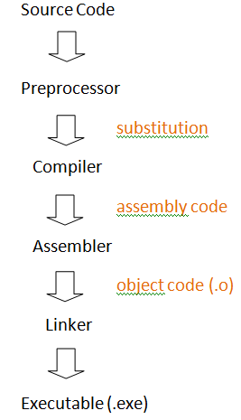

C++ Tutorial - Macro - 2017
When the C++ compiler runs, it first calls preprocessor to find any compiler directives that may be included in the source code.
The directives begin with the # character and will be implemented first to modify the source code before it is assembled and compiled.
The changes made by compiler directives to the preprocessor create new temporary files that are not normally seen. It is these temporary files that are used to create a binary object file.
The compilation process employs the Preprocessor to compile source code, an Assembler to translate this into machine code, and a Linker to convert one or more binary objects into an executable program.

So, the preprocessor will replace
#include <iostream>directive with definitions for the cin, cout, cerr functions.
In the previous section, we saw the preprocessor substitutes library code for #include directives. Other preprocessor directives can be used to substitute test or numerics before assembly and compilation.
The #define directives specifies a macro, comprising an identifier name and a string or numerics, to be substituted by the preprocessor for each occurance of that macro in the source code.
#define STARS "*****"
#define SITE "bogotobogo.com"
#define YEAR 2011
#include <iostream>
using namespace std ;
int main()
{
cout << STARS << endl << SITE << endl << STARS ;
cout << endl << "YEAR is: " << YEAR ;
cout << endl << "Next YEAR is: " << ((YEAR)+1) << endl ;
return 0 ;
}
Output is:
***** bogotobogo.com ***** YEAR is: 2011 Next YEAR is: 2012
Similar to #include preprocessor directives, #define directives can appear at the start of the source code. As with constant variable names, the macro name uses uppercase, and defined string values should be encolsed within double quotes. For numeric substitution in expression the macro name should be enclosed in parentheses to ensure correct precedence.
There are couple of reasons for avoiding #define for constant:
- No type checking
For the constant we are defining using #define, there are no provisions of type checking. So, we should make sure that we explicitly specify the type of the constant, such as 3.4f. - No scoping
A constant defined is global. - No access control
We cannot impose any access control over #define, and it's always public. - No symbol
In the previous example, we used YEAR constant, but this symbolic name may be stripped from our code by the preprocessor. As a result, the compiler never sees the name and cannot put it into symbol table. This causes debugging headache when we can just see the value of the constant not the name.
The #ifdef directive performs the most common preprocessor function by testing to see if a specified macro has been defined. When the macro has been defined, so the test returns true, the preprocessor will do insert on subsequent lines up to a corresponding #endif directive.
On the other hand, the #ifndef directive tests to see if a specified macro has not been defined. When that test returns true, it will do insert up the a corresponding #endif directive.
Any previously defined macro can be removed later using the #undef directive so that subsequent #ifdef conditional tests fail. The macro can then be redefined by using #define directive again.
To test multiple definitions, the #ifdef macro can be expressed as #if defined and additional tests made #elif defined macros.
#if defined _WIN32 #define PLATFORM "Windows" #elif defined __linux #define PLATFORM "Linux" #elif defined __macosx #define PLATFORM "MacOSX" #else #define PLATFORM "Others" #endif
A C++ code usually has many .h header files, and the header files may contain one or more #include directives to make other classes or functions available from other header files. This can cause duplication where definitions appear in two files. The solution to this problem of redefinition is to use preprocessor directives to ensure the compiler will only be exposed to a single definition, so called inclusion guards. This creates a unique macro name for each header file. The name is an uppercase version of the file name, with the dot changed to an underscore. For instance, myfunction.h is represented as MYFUNCTION_H.
To create a macro to guard against duplication, an #ifndef directive first tests to see if the definition has already been made by another header file included in the same program. If the definition already exists, the compiler ignores the duplicate definition, otherwise, a #define directive will permit the compiler to use the definition in that header file.
#ifndef MYFUNCTION_H
#define MYFUNCTION_H
inline int func( int x , int y ){ return ( x * y ) ; }
#endif
A well-designed C++ API must always avoid platform-specific #ifdef/#endif lines in its public headers. As an example, let's look at the following API which encapsulates the functionality offered by a tablet. Some tablet offer built-in GPS, but not all of them. But as an API designer, we should never expose this directly through our API:
class TabletDevice
{
public:
#if defined TARGET_OS_TABLET
bool getGPS(double &latitude;, double &longitude;);
#endif
};
The platform specific API design requires a different API on different platforms, which means it also forces the clients of our API to introduce the same platform specificity into their own applications. In other words, our clients should guard any calls go getGPS() with the same #if statement, otherwise their code may fail to compile with an undefined symbol error on other platforms.
Making things worse, if in a later version of the API, we also add support for another device class, like Windows Tablet, then we need to update the #if line in our public header to include something like _WIN32_WCE. Then, our clients also need to find all instances in their code where they have embedded the TARGET_OS_TABLET define and extend it to also include _WIN32_WCE. This is the price we have to pay because we have exposed the implementation details of our API.
Therefore, we should hide the fact that the function only works on certain platforms and provide a method to determine whether the implementation offers the desired functionalities on the current platform:
class TabletDevice
{
public:
bool hasGPS() const;
bool getGPS(double &latitude;, double &longitude;);
};
In this way, we now have our API which is consistent over all platforms and it does not expose the details of which platform support GPS. So, the client can write code to check whether the current device supports GPS device, by calling hasGPS(), and if so, they can call the getGPS() method. The method hasGPS() can be something like this:
bool TabletDevice::hasGPS() const
{
public:
#if defined TARGET_OS_TABLET
return true;
#else
return false;
#endif
}
This is much better design than the original design because the platform specific #if is now hidden in the .cpp file instead of being exposed in the header file.
#define can be used to make macro functions that will be substituted in the source before compilation. A preprocessor function declaration comprises a macro name immediately followed by parentheses containing the function's argument. Do not leave any space between the name and the parentheses. The declaration is then followed by the function definition within another set of parentheses. For example, a preprocessor macro function to give bigger value of the two looks like this:
#define MAX(a,b) (a > b ? a : b)
When we use macro functions, however, unlike regular functions, they do not perform any kind of type checking. Because of this drawbacks, inline functions are usually preferable to macro functions. But because macros directly substitute their code, they reduce the overhead of a function call.
#define MAX(a,b) (a > b ? a : b)
#include <iostream>
using namespace std ;
inline int max(int a, int b) {return (a > b ? a: b);}
int main()
{
int x = 10, y = 20;
cout << "Macro Max(x,y) = " << MAX(x,y) << endl;
cout << "inline max(x,y) = " << max(x,y) << endl;
return 0;
}
Output is:
Macro Max(x,y) = 20 inline max(x,y) = 20
One of the common mistakes we make when we use Macro is to forget what Macro is suppose to do. In the following example, if we miss parenthesis around it, it will give us unexpected result.
#include <stdio.h>
#define SQUARE(n) ((n)*(n))
int main()
{
int j = 64/SQUARE(4);
printf("j = %d",j);
return 0;
}
surprisingly, it prints out j = 64 instead of j = 4.
Why?
Because j = 64/4*4 but not j = 64/(4*4).
So, we need to use the following Macro to get intended answer.
#define SQUARE(n) (n*n)
Here is another example which may give unexpected results:
#include <stdio.h>
#define SQR(n)(n*n)
int main()
{
int a, b = 3;
a = SQR(b+2); // a = (b+2*b+2) = 3+2*3+2 = 11 not 25
printf("%d\n", a);
return 0;
}
So, in this case, the macro should be:
#define SQR(n)((n)*(n))
The number-sign or stringizing operator (#) converts macro parameters to string literals without expanding the parameter definition. It is used only with macros that take arguments. In other words, it converts a characters passed as a macro argument into a string, and adds double quotes to enclose the string.
All whitespaces before or after the characters passed as a macro argument to the stringizing operator (#) is ignored and multiple spaces between characters is reduced to just one space.
The stringizing operator is useful to pass string values to a preprocessor #define directive without needing to surround each string with double quote.
When we use the merging operator (##), we can combine two terms into a single term.
#define SIMPLE(s) cout << #s << endl
#define MERGE( s1, s2 ) cout << s1##s2 << endl
#include <string>
#include <iostream>
using namespace std ;
int main()
{
string anotherline = "A host of dancing " ;
anotherline += "Daffodils; " ;
SIMPLE(I wandered lonely as a Cloud) ;
SIMPLE(That floats on high oer Vales and Hills) ;
SIMPLE(When all at once I saw a crowd) ;
MERGE(another, line ) ;
SIMPLE(On fishing up the moon.) ;
SIMPLE(Along the Lake beneath the trees);
SIMPLE(Ten thousand dancing in the breeze.);
return 0 ;
}
Output is:
I wandered lonely as a Cloud That floats on high oer Vales and Hills When all at once I saw a crowd A host of dancing Daffodils; On fishing up the moon. Along the Lake beneath the trees Ten thousand dancing in the breeze.
By defining an ASSERT macro function, we can evaluate a specified condition for a bollean value. The condition to be evaluated will be passed from the caller as the ASSERT function argument. The function can then excute appropriate statements according to the result of the evaluation. Multiple statements can be included in the macro function definition by adding a backslash at the end of each line, allowing the definition to continue on the next line.
Several statements calling the ASSERT function can be added to the code to monitor the a condition as the program proceeds. An ASSERT can be controlled by a DEBUG macro, which allows debugging to be easily turned on and off simply by changing the value of the DEBUG control macro.
#define DEBUG 1
#if( DEBUG == 1 )
#define ASSERT( expression ) \
cout << #expression << " ..." << num ; \
if( expression!= true) { \
cout << " Failed in file: " << __FILE__ ; \
cout << " at line: " << __LINE__ << endl; \
} \
else cout << " Passed" << endl ;
#elif( DEBUG == 0 )
#define ASSERT( result ) \
cout << "Number is " << num << endl ;
#endif
#include <iostream>
using namespace std ;
int main()
{
int num = 99 ;
ASSERT( num < 100 ) ;
num++ ;
ASSERT( num < 100 ) ;
return 0 ;
}
We started the program by defining a DEBUG macro with an ON value of 1 to control the ASSERT function"
#define DEBUG 1
Then, we add a macro if-elif to define the ASSERT according to the control value
Output is:
num < 100 ...99 Succeeds num < 100 ...100 Fails in file: c:\assrt.cpp at line: 31
Ph.D. / Golden Gate Ave, San Francisco / Seoul National Univ / Carnegie Mellon / UC Berkeley / DevOps / Deep Learning / Visualization